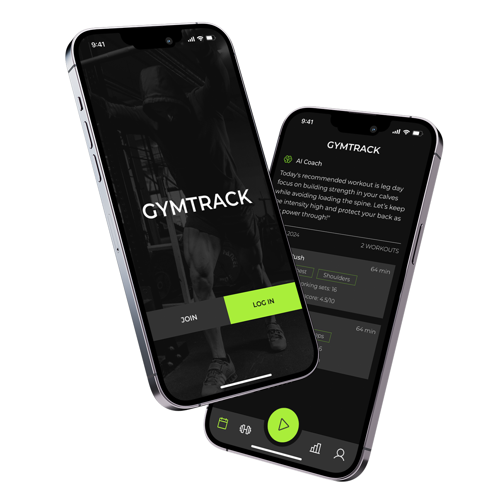

Discover more about how GYMTRACK came to be.
GYMTRACK was developed with the goal of revolutionizing the workout tracking space. Born out of extensive research, user feedback, and a passion for fitness, GYMTRACK is designed to meet the demands of modern athletes and beginners alike. Whether you’re looking to break personal records or maintain a healthy lifestyle, GYMTRACK provides the tools and support you need to succeed.